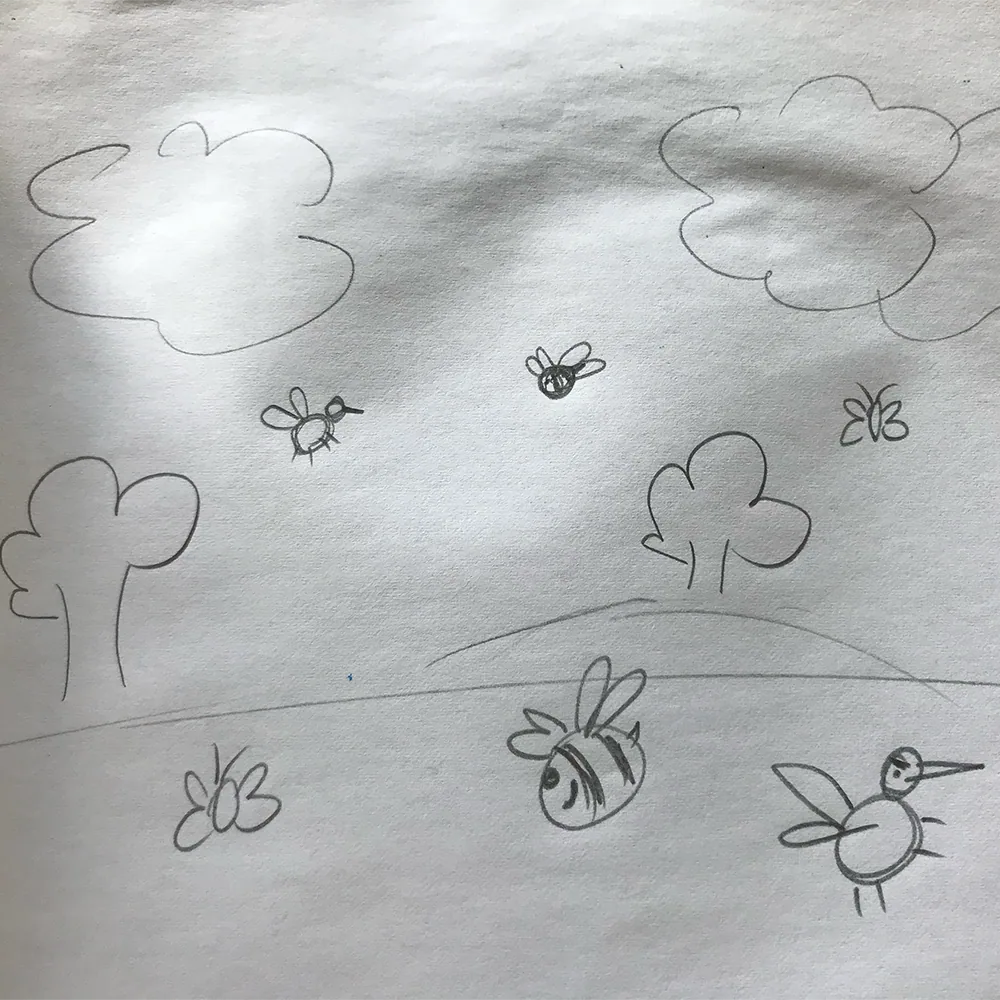
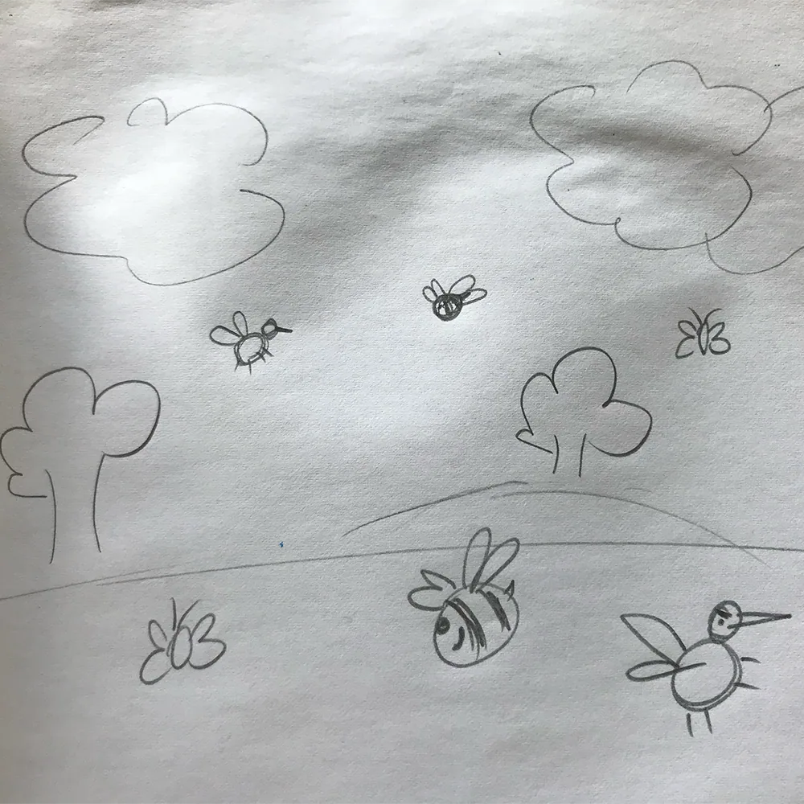

Temaopgaven gik ud på, at vi skulle kode en hjemmeside, som indholdte et spil, som vi havde kodet, ved hjælp af javascript. Vi skulle desuden tegne spillets elementer og baggrund i
Adobe Illustrator og dette skulle også indgå i den færdige hjemmeside.
Jeg kodede mit spil, ved hjælp af en masse af de øvelser, som vi havde lavet igennem temaet og tilpasse og udvælge dem, som jeg skulle bruge til mit spil. Nedenfor kan det desuden ses,
hvordan jeg først tegnede mine elementer og baggrund på papir og derefter tegnede det i Illustrator.
 



Som det kan ses til højre, så mit spil sådan ud, med en start-side, spil-side, taber-side og vinder-side.

Se min endelige opgave her: